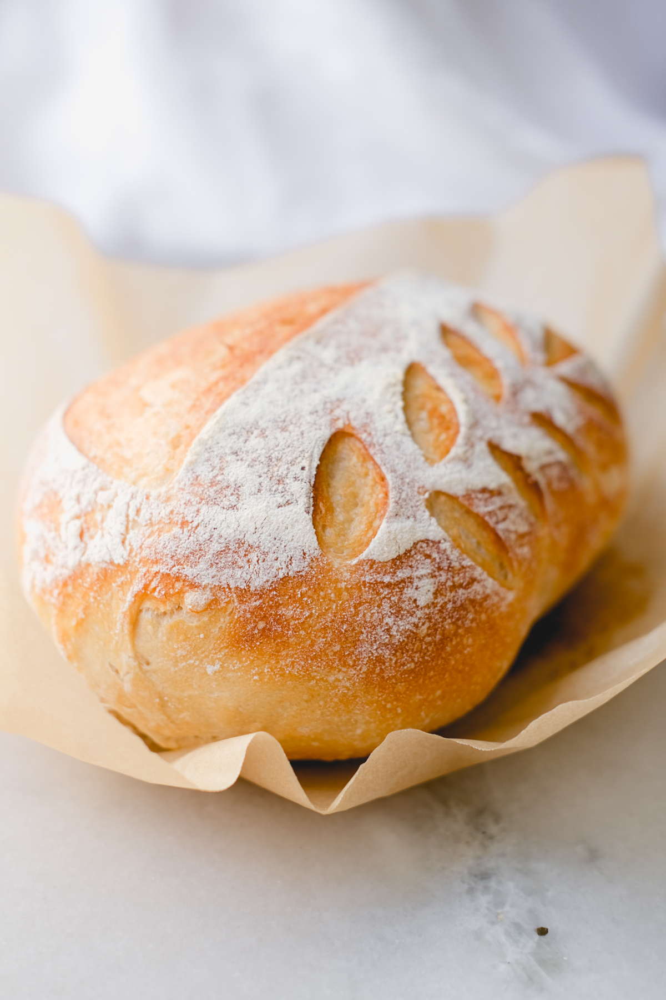

Sourdough Loaf

Ingredients
- 50g Active Starter
- 350g Water
- 500g Flour
- 10g Salt
Directions
- Mix together Starter and Water
- Add Flour and Salt to previous mix
- Continue mixing Ingredients until shaggy dough forms
- Do 4-6 sets of Fold and Turn
- Bulk ferment until doubled
- Shape dough and let sit for 30 minutes to 1 hour
- While dough is sitting, preheat your oven and dutch oven to 425 and boil a small pot of water
- Place dough on parchment paper and score
- Placed the boiled water on the bottom shelf of the oven and bake the dough in a covered dutch oven for 20 minutes
- Uncover the dough and bake for 25 more minutes
- Remove the dutch oven from the oven and lit sit in the dutch oven for 10 more minutes
- Remove the bread from the dutch oven and let cool until ready to serve.
Return to main page